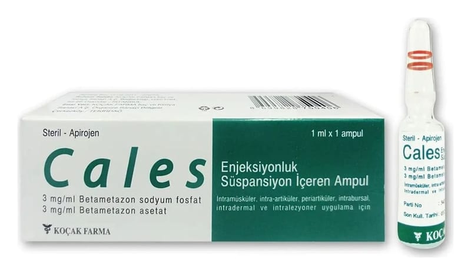

Cales 3 mg/ml + 3 mg/ml IM Enjeksiyonluk Süspansiyon İçeren Ampul

Ne için kullanılır
KT · Bölüm 1• CALES, yabancı madde içermeyen beyaz renkli, homojen süspansiyon içeren 2 mililitrelik cam ampuller halinde ambalajlanmıştır.
• CALES, etkin madde olarak betametazon sodyum fosfat ve betametazon asetat içeren mikropsuz (steril), sulu bir süspansiyondur. Bu maddeler kortikosteroidler denilen bir ilaç sınıfına aittir. Bu kortizon tipi ilaçlar vücudun iltihaplı bölgelerini iyileştirmeye yardımcı olur. Şişliği, kızarıklığı, kaşıntıyı ve alerjik reaksiyonları azaltır ve genellikle birçok hastalığın tedavisinin bir parçasını oluştururlar.
• CALES kortikosteroid tedavisi gerekli olduğunda endikedir. Kortikosteroidler şu semptomları azaltırlar: şişlik, kızarıklık, kaşıntı ve alerjik reaksiyonlar.
CALES aşağıdaki durumlar için endikedir: - artrit; - bursit; - kalça sorunları; - lumbago; - kemik veya doku hastalıkları; - alerjik durumlar (astım, yüksek ateş, bronşit, ilaçlara veya böcek sokmalarına aşırı duyarlılık reaksiyonları); - cilt hastalıkları (iltihaplanma, kaşıntı, kurdeşen, saç dökülmesi, sedef hastalığı, yara izleri).